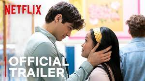

About
Teen Lara Jean Covey lives a normal, boring high school life until some unexpected letters get released to all her former crushes. These were love letters and were meant for her eyes only, until one day her sister Kitty sends them out in hopes to give Lara Jean a more interesting life. At school her life is thrown into turmoil when these boys start to approach her about their letters. Among these boys are Josh, who happens to be her next door neighbor and her older sister Margot's boyfriend, and Peter Kavinsky, her arch nemesis, Gen's boyfriend. Through out some very unusual events Lara Jean finds herself and maybe even a real relationship. 
Lara Jean Covey is a teenage girl who writes love letters when she gets a crush too big to handle but she never actually sends them. One day her deepest secrets are revealed and she creates and elaborate plan to save herself from being too embarrassed but it all goes pear shaped when it turns into more than fake.
Filming
Filmed entirely in Vancouver BC, locations such as the High School sports track in glorious teal (more here) were the main starting points for the film’s colour palette which is dominated by blues, greens and teals often contrasted with pink and yellow. “We created a visual presentation with images and photographs of what we called ‘The Book’. This presentation was sent out to all the creative departments – costume department, art department, set decoration department, props department and the construction/paint department so they could begin to put the visual pieces together along side of us”.
And what of that fantastic floral wallpaper creating a statement wall behind her bed? It turns out not to be wallpaper at all but a hand painted mural: “We decided that she would have painted the magical wall mural herself and surrounded herself with furniture and items that all made an emotional impression on her and brought beauty to her world”.
Soundtrack
The soundtrack to To All The Boys I've Loved Before ties heavily into the film, featuring songs that brilliantly capture each tender and emotional moment. The heartfelt teen comedy stars Lana Condor as Lara Jean Covey, Noah Centineo as Peter K, and Israel Broussard as Josh Sanderson. The popular Netflix film is sweet, funny, and a must watch (even if you're not a teen).In the To All The Boys I've Loved Before soundtrack, fans can hear songs by Blood Orange, Tears For Fears, Lauv and more. The TATBILB soundtrack is full of hidden gems and well known hits as well.
Netflix's To All The Boys I've Loved Before is already a huge hit with audiences. We're sure you loved the film itself, but there is no denying how incredible the soundtrack is. The soundtrack to To All The Boys I've Loved Before ties heavily into the film, featuring songs that brilliantly capture each tender and emotional moment.The heartfelt teen comedy stars Lana Condor as Lara Jean Covey, Noah Centineo as Peter K, and Israel Broussard as Josh Sanderson. The popular Netflix film is sweet, funny, and a must watch (even if you're not a teen).In the To All The Boys I've Loved Before soundtrack, fans can hear songs by Blood Orange, Tears For Fears, Lauv and more. The TATBILB soundtrack is full of hidden gems and well known hits as well.